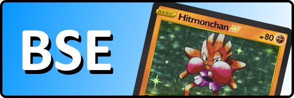
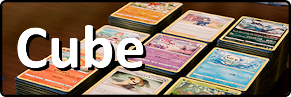

Alternate Formats
Mix up the game with countless variations!
Ace Trainer Showdown is a single-prize format encouraging creative multi-type decks. It also has its own subformat where players balance deckbuilding restrictions in exchange for multiple ACE Specs.

Base Set Evolution is a fan-made spiritual revamp of the Base-Fossil format with modern TCG mechanics. These fan-made cards are created and maintained by us at this site.

Cubes are formats using a predesignated set of cards, typically played in a draft format. Building decks out of a cube is one of the best way to teach new players how to play.
Other Formats
Gym Leader Challenge (GLC)
Take on the role of a gym leader in this single-prize, single-type, singleton format with no Rule Box cards allowed. Created by Andrew Mahone of Tricky Gym, visit the official website for more information.
Pauper
In Pauper, all cards must be Common, Uncommon, or a higher rarity printing of a Common or Uncommon card. Local environments may have their own banlists and additional restrictions on legal sets. (Commonly, Alt Formats will restrict anything printed prior to Black & White)
Theme Format
In this format, any card that has ever been printed in a Theme Deck, V Battle Deck, or ex Battle Deck is legal. Some environments may remove the V/ex Pokémon from the pool to encourage single-prize play. Note that "Deluxe Battle Decks" and "League Battle Decks" are not legal.
Block Formats
In Block Formats, all cards printed in a generation are legal. For example, Galar Block would be all cards from Sword & Shield up to but not including the release of Scarlet & Violet. The most popular Block Format is RSE-PK, the Hoenn Block. The Kanto Block format often makes an exception for Neo Genesis, the first Johto set.